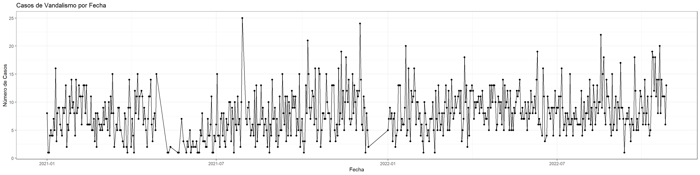
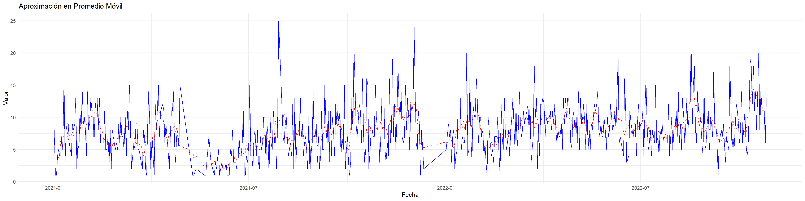
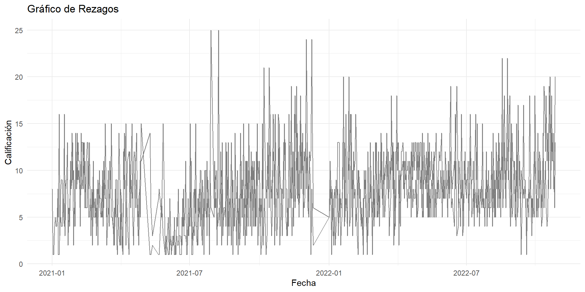
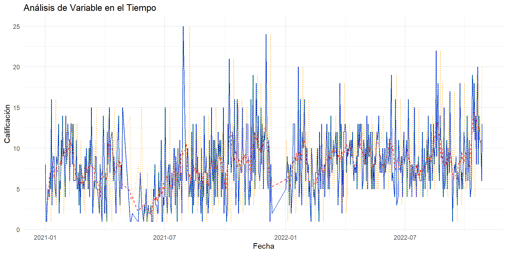

2 Capitulo 2 Estructura de los datos en series de tiempo
La estructura de los datos en series de tiempo es fundamental para el análisis y modelado adecuados de los patrones temporales en los datos. Los datos de serie de tiempo son observaciones registradas en momentos específicos a lo largo del tiempo.
En el presente cápitulo abordaremos el análisis de la información contenida en la base de datos de vandalismos suministrada por el ente gestor del sistema de transporte masivo MIO, con el fin de verificar en primera instancia los valores contenidos, información relevante y estructura del dataset.
La estructura de los datos en series de tiempo se basa en la secuencia temporal de observaciones de una variable específica. Entender esta estructura es esencial para aplicar técnicas de análisis y modelado de series de tiempo de manera efectiva.
##
## Attaching package: 'dplyr'## The following objects are masked from 'package:stats':
##
## filter, lag## The following objects are masked from 'package:base':
##
## intersect, setdiff, setequal, union##
## Attaching package: 'lubridate'## The following objects are masked from 'package:base':
##
## date, intersect, setdiff, union## Registered S3 method overwritten by 'quantmod':
## method from
## as.zoo.data.frame zoo## ── Attaching packages ────────────────────────────────────────────── fpp2 2.5 ──## ✔ forecast 8.21 ✔ expsmooth 2.3
## ✔ fma 2.5## ##
## Attaching package: 'zoo'## The following objects are masked from 'package:base':
##
## as.Date, as.Date.numericvandalismo <- read_excel("vandalismo.xlsx")2.1 MEDIA MOVIL
En el análisis de series temporales, el método de medias móviles tiene diversas aplicaciones: así, este método puede sernos útil si queremos calcular la tendencia de una serie temporal sin tener que ajustarnos a una función previa, ofreciendo así una visión suavizada o alisada de una serie, ya que promediando varios valores se elimina parte de los movimientos irregulares de la serie; también puede servirnos para realizar predicciones cuando la tendencia de la serie tiene una media constante.
La aproximación en promedio móvil es una técnica utilizada en el análisis de series de tiempo para suavizar los datos y resaltar tendencias subyacentes o patrones cíclicos al calcular el promedio de un conjunto de valores en un intervalo móvil de tiempo. Esta técnica es especialmente útil para eliminar el ruido y las fluctuaciones aleatorias en los datos, lo que puede hacer que los patrones temporales sean más visibles.
Fecha <- seq(as.Date("2021-01-01"), as.Date("2022-10-26"), by = "days", each = 1)
datos_sumados <- aggregate(Calificación ~ Fecha, data = vandalismo, sum)grafico <- ggplot(datos_sumados, aes(x = Fecha, y = Calificación)) +
geom_line() + # Línea para conectar los puntos
geom_point() + # Puntos en cada fecha
labs(x = "Fecha", y = "Número de Casos", title = "Casos de Vandalismo por Fecha") +
theme_bw()
# Mostrar el gráfico
print(grafico)
# Calcular el promedio móvil en un intervalo dado
promedio_movil <- function(datos_sumados, Calificación, intervalo) {
datos_sumados %>%
mutate(promedio = rollmean(Calificación, intervalo, fill = NA))
}
promedio_movil## function(datos_sumados, Calificación, intervalo) {
## datos_sumados %>%
## mutate(promedio = rollmean(Calificación, intervalo, fill = NA))
## }# Calcular promedio móvil con intervalo de 5 días
data_con_promedio <- promedio_movil(datos_sumados, "Calificación", 5)
data_con_promedio## Fecha Calificación promedio
## 1 2021-01-01 8 NA
## 2 2021-01-02 1 NA
## 3 2021-01-03 1 3.8
## 4 2021-01-04 4 3.0
## 5 2021-01-05 5 3.6
## 6 2021-01-06 4 4.8
## 7 2021-01-07 4 5.0
## 8 2021-01-08 7 7.2
## 9 2021-01-09 5 7.0
## 10 2021-01-10 16 7.8
## 11 2021-01-11 3 8.2
## 12 2021-01-12 8 9.0
## 13 2021-01-13 9 7.0
## 14 2021-01-14 9 7.4
## 15 2021-01-15 6 6.6
## 16 2021-01-16 5 6.6
## 17 2021-01-17 4 6.4
## 18 2021-01-18 9 7.0
## 19 2021-01-19 8 8.6
## 20 2021-01-20 9 8.2
## 21 2021-01-21 13 7.6
## 22 2021-01-22 2 7.0
## 23 2021-01-23 6 7.4
## 24 2021-01-24 5 6.4
## 25 2021-01-25 11 8.8
## 26 2021-01-26 8 9.4
## 27 2021-01-27 14 10.4
## 28 2021-01-28 9 9.8
## 29 2021-01-29 10 9.0
## 30 2021-01-30 8 9.0
## 31 2021-01-31 4 8.8
## 32 2021-02-01 14 8.6
## 33 2021-02-02 8 9.6
## 34 2021-02-03 9 11.0
## 35 2021-02-04 13 10.4
## 36 2021-02-05 11 10.0
## 37 2021-02-06 11 10.4
## 38 2021-02-07 6 10.4
## 39 2021-02-08 11 10.8
## 40 2021-02-09 13 10.2
## 41 2021-02-10 13 11.6
## 42 2021-02-11 8 10.6
## 43 2021-02-12 13 9.2
## 44 2021-02-13 6 7.8
## 45 2021-02-14 6 7.4
## 46 2021-02-15 6 7.0
## 47 2021-02-16 6 6.8
## 48 2021-02-17 11 6.6
## 49 2021-02-18 5 6.8
## 50 2021-02-19 5 6.2
## 51 2021-02-20 7 5.6
## 52 2021-02-21 3 5.0
## 53 2021-02-22 8 5.6
## 54 2021-02-23 2 5.6
## 55 2021-02-24 8 6.2
## 56 2021-02-25 7 5.6
## 57 2021-02-26 6 6.4
## 58 2021-02-27 5 5.8
## 59 2021-02-28 6 6.2
## 60 2021-03-01 5 6.2
## 61 2021-03-02 9 7.2
## 62 2021-03-03 6 7.4
## 63 2021-03-04 10 7.8
## 64 2021-03-05 7 7.0
## 65 2021-03-06 7 7.8
## 66 2021-03-07 5 6.6
## 67 2021-03-08 10 7.4
## 68 2021-03-09 4 7.6
## 69 2021-03-10 11 9.6
## 70 2021-03-11 8 9.2
## 71 2021-03-12 15 8.8
## 72 2021-03-13 8 7.8
## 73 2021-03-14 2 7.2
## 74 2021-03-16 6 6.0
## 75 2021-03-17 5 6.2
## 76 2021-03-18 9 6.8
## 77 2021-03-19 9 6.6
## 78 2021-03-20 5 6.2
## 79 2021-03-21 5 4.8
## 80 2021-03-23 3 4.6
## 81 2021-03-24 2 5.0
## 82 2021-03-25 8 4.4
## 83 2021-03-26 7 4.0
## 84 2021-03-27 2 5.4
## 85 2021-03-28 1 6.6
## 86 2021-03-29 9 7.0
## 87 2021-03-30 14 7.0
## 88 2021-03-31 9 8.2
## 89 2021-04-01 2 7.2
## 90 2021-04-02 7 4.6
## 91 2021-04-03 4 5.2
## 92 2021-04-04 1 6.4
## 93 2021-04-05 12 7.2
## 94 2021-04-06 8 9.4
## 95 2021-04-07 11 10.6
## 96 2021-04-08 15 10.4
## 97 2021-04-09 7 11.2
## 98 2021-04-10 11 11.2
## 99 2021-04-12 12 9.4
## 100 2021-04-13 11 9.8
## 101 2021-04-14 6 9.0
## 102 2021-04-15 9 7.6
## 103 2021-04-16 7 5.8
## 104 2021-04-17 5 6.0
## 105 2021-04-18 2 6.4
## 106 2021-04-19 7 7.2
## 107 2021-04-20 11 9.0
## 108 2021-04-21 11 9.8
## 109 2021-04-22 14 9.0
## 110 2021-04-23 6 8.2
## 111 2021-04-24 3 7.6
## 112 2021-04-25 7 5.8
## 113 2021-04-26 8 7.6
## 114 2021-04-27 5 7.2
## 115 2021-04-28 15 6.0
## 116 2021-05-10 1 4.8
## 117 2021-05-11 1 4.0
## 118 2021-05-13 2 1.2
## 119 2021-05-21 1 2.4
## 120 2021-05-22 1 2.8
## 121 2021-05-25 7 2.6
## 122 2021-05-27 3 3.0
## 123 2021-05-30 1 3.2
## 124 2021-05-31 3 2.8
## 125 2021-06-01 2 2.4
## 126 2021-06-03 5 2.6
## 127 2021-06-04 1 2.6
## 128 2021-06-05 2 2.6
## 129 2021-06-06 3 2.0
## 130 2021-06-07 2 2.4
## 131 2021-06-09 2 2.2
## 132 2021-06-10 3 1.8
## 133 2021-06-11 1 1.6
## 134 2021-06-12 1 2.2
## 135 2021-06-13 1 2.4
## 136 2021-06-14 5 3.8
## 137 2021-06-15 4 4.2
## 138 2021-06-16 8 4.6
## 139 2021-06-17 3 4.2
## 140 2021-06-18 3 3.8
## 141 2021-06-19 3 2.6
## 142 2021-06-20 2 3.4
## 143 2021-06-21 2 3.6
## 144 2021-06-22 7 3.8
## 145 2021-06-23 4 4.6
## 146 2021-06-24 4 6.4
## 147 2021-06-25 6 5.2
## 148 2021-06-26 11 4.6
## 149 2021-06-27 1 4.6
## 150 2021-06-28 1 4.0
## 151 2021-06-29 4 3.0
## 152 2021-06-30 3 5.8
## 153 2021-07-01 6 6.4
## 154 2021-07-02 15 6.4
## 155 2021-07-03 4 6.2
## 156 2021-07-04 4 6.4
## 157 2021-07-05 2 5.0
## 158 2021-07-06 7 5.0
## 159 2021-07-07 8 5.8
## 160 2021-07-08 4 6.0
## 161 2021-07-09 8 5.0
## 162 2021-07-10 3 4.8
## 163 2021-07-11 2 5.0
## 164 2021-07-12 7 4.6
## 165 2021-07-13 5 6.0
## 166 2021-07-14 6 7.6
## 167 2021-07-15 10 6.8
## 168 2021-07-16 10 7.6
## 169 2021-07-17 3 7.8
## 170 2021-07-18 9 6.0
## 171 2021-07-19 7 6.0
## 172 2021-07-20 1 6.6
## 173 2021-07-21 10 5.8
## 174 2021-07-22 6 6.6
## 175 2021-07-23 5 7.6
## 176 2021-07-24 11 7.0
## 177 2021-07-25 6 6.2
## 178 2021-07-26 7 7.2
## 179 2021-07-27 2 10.0
## 180 2021-07-28 10 10.2
## 181 2021-07-29 25 10.0
## 182 2021-08-02 7 11.4
## 183 2021-08-03 6 11.4
## 184 2021-08-04 9 7.8
## 185 2021-08-05 10 7.2
## 186 2021-08-06 7 7.0
## 187 2021-08-07 4 6.4
## 188 2021-08-08 5 5.2
## 189 2021-08-09 6 6.2
## 190 2021-08-10 4 5.8
## 191 2021-08-11 12 7.4
## 192 2021-08-12 2 6.8
## 193 2021-08-13 13 7.2
## 194 2021-08-14 3 6.0
## 195 2021-08-15 6 8.2
## 196 2021-08-17 6 7.0
## 197 2021-08-18 13 8.2
## 198 2021-08-19 7 7.8
## 199 2021-08-20 9 7.8
## 200 2021-08-21 4 6.6
## 201 2021-08-22 6 6.2
## 202 2021-08-23 7 4.8
## 203 2021-08-24 5 6.0
## 204 2021-08-25 2 5.0
## 205 2021-08-26 10 4.8
## 206 2021-08-27 1 4.6
## 207 2021-08-28 6 7.0
## 208 2021-08-29 4 6.4
## 209 2021-08-30 14 7.6
## 210 2021-08-31 7 8.2
## 211 2021-09-01 7 8.0
## 212 2021-09-02 9 6.6
## 213 2021-09-03 3 5.6
## 214 2021-09-04 7 5.0
## 215 2021-09-05 2 5.4
## 216 2021-09-06 4 5.8
## 217 2021-09-07 11 5.4
## 218 2021-09-08 5 8.0
## 219 2021-09-09 5 8.8
## 220 2021-09-10 15 7.8
## 221 2021-09-11 8 9.0
## 222 2021-09-12 6 8.6
## 223 2021-09-13 11 7.8
## 224 2021-09-14 3 7.0
## 225 2021-09-15 11 7.8
## 226 2021-09-16 4 7.2
## 227 2021-09-17 10 7.4
## 228 2021-09-18 8 7.6
## 229 2021-09-19 4 8.6
## 230 2021-09-20 12 8.8
## 231 2021-09-21 9 9.0
## 232 2021-09-22 11 10.4
## 233 2021-09-23 9 8.8
## 234 2021-09-24 11 8.4
## 235 2021-09-25 4 7.2
## 236 2021-09-26 7 8.4
## 237 2021-09-27 5 6.6
## 238 2021-09-28 15 6.8
## 239 2021-09-29 2 6.8
## 240 2021-09-30 5 6.4
## 241 2021-10-01 7 3.6
## 242 2021-10-02 3 3.8
## 243 2021-10-03 1 5.4
## 244 2021-10-04 3 5.6
## 245 2021-10-05 13 9.2
## 246 2021-10-06 8 12.0
## 247 2021-10-07 21 13.2
## 248 2021-10-08 15 12.0
## 249 2021-10-09 9 12.2
## 250 2021-10-10 7 10.4
## 251 2021-10-11 9 9.6
## 252 2021-10-12 12 9.0
## 253 2021-10-13 11 10.8
## 254 2021-10-14 6 10.4
## 255 2021-10-15 16 8.6
## 256 2021-10-16 7 7.4
## 257 2021-10-17 3 9.4
## 258 2021-10-18 5 9.2
## 259 2021-10-19 16 8.2
## 260 2021-10-20 15 8.6
## 261 2021-10-21 2 9.2
## 262 2021-10-22 5 7.6
## 263 2021-10-23 8 6.0
## 264 2021-10-24 8 7.0
## 265 2021-10-25 7 9.0
## 266 2021-10-26 7 9.4
## 267 2021-10-27 15 9.4
## 268 2021-10-28 10 9.6
## 269 2021-10-29 8 8.8
## 270 2021-10-30 8 7.2
## 271 2021-10-31 3 7.8
## 272 2021-11-01 7 8.8
## 273 2021-11-02 13 9.8
## 274 2021-11-03 13 10.2
## 275 2021-11-04 13 9.4
## 276 2021-11-05 5 8.0
## 277 2021-11-06 3 6.2
## 278 2021-11-07 6 6.8
## 279 2021-11-08 4 7.0
## 280 2021-11-09 16 8.0
## 281 2021-11-10 6 10.6
## 282 2021-11-11 8 11.2
## 283 2021-11-12 19 10.4
## 284 2021-11-13 7 10.2
## 285 2021-11-14 12 10.6
## 286 2021-11-15 5 10.4
## 287 2021-11-16 10 11.4
## 288 2021-11-17 18 11.0
## 289 2021-11-18 12 12.8
## 290 2021-11-19 10 12.2
## 291 2021-11-20 14 9.8
## 292 2021-11-21 7 8.8
## 293 2021-11-22 6 9.8
## 294 2021-11-23 7 8.6
## 295 2021-11-24 15 9.8
## 296 2021-11-25 8 10.6
## 297 2021-11-26 13 10.2
## 298 2021-11-27 10 9.6
## 299 2021-11-28 5 10.2
## 300 2021-11-29 12 10.0
## 301 2021-11-30 11 12.8
## 302 2021-12-01 12 14.6
## 303 2021-12-02 24 13.4
## 304 2021-12-03 14 12.2
## 305 2021-12-04 6 12.0
## 306 2021-12-05 5 9.0
## 307 2021-12-06 11 6.4
## 308 2021-12-07 9 6.8
## 309 2021-12-08 1 6.8
## 310 2021-12-09 8 5.0
## 311 2021-12-10 5 4.2
## 312 2021-12-11 2 5.4
## 313 2022-01-01 5 5.6
## 314 2022-01-02 7 6.0
## 315 2022-01-03 9 7.2
## 316 2022-01-04 7 6.8
## 317 2022-01-05 8 6.8
## 318 2022-01-06 3 6.6
## 319 2022-01-07 7 5.6
## 320 2022-01-08 8 4.8
## 321 2022-01-09 2 5.2
## 322 2022-01-10 4 6.4
## 323 2022-01-11 5 7.4
## 324 2022-01-12 13 9.6
## 325 2022-01-13 13 9.8
## 326 2022-01-14 13 10.2
## 327 2022-01-15 5 8.8
## 328 2022-01-16 7 7.4
## 329 2022-01-17 6 6.6
## 330 2022-01-18 6 9.6
## 331 2022-01-19 9 9.0
## 332 2022-01-20 20 8.8
## 333 2022-01-21 4 10.8
## 334 2022-01-22 5 10.4
## 335 2022-01-23 16 7.0
## 336 2022-01-24 7 8.6
## 337 2022-01-25 3 9.6
## 338 2022-01-26 12 8.6
## 339 2022-01-27 10 10.4
## 340 2022-01-28 11 12.2
## 341 2022-01-29 16 11.0
## 342 2022-01-30 12 11.0
## 343 2022-01-31 6 10.8
## 344 2022-02-01 10 9.0
## 345 2022-02-02 10 8.2
## 346 2022-02-03 7 7.8
## 347 2022-02-04 8 7.0
## 348 2022-02-05 4 5.6
## 349 2022-02-06 6 4.4
## 350 2022-02-07 3 4.8
## 351 2022-02-08 1 5.6
## 352 2022-02-09 10 5.6
## 353 2022-02-10 8 5.8
## 354 2022-02-11 6 6.6
## 355 2022-02-12 4 5.2
## 356 2022-02-13 5 5.0
## 357 2022-02-14 3 5.2
## 358 2022-02-15 7 5.8
## 359 2022-02-16 7 6.8
## 360 2022-02-17 7 7.2
## 361 2022-02-18 10 6.0
## 362 2022-02-19 5 7.0
## 363 2022-02-20 1 7.0
## 364 2022-02-21 12 6.0
## 365 2022-02-22 7 7.6
## 366 2022-02-23 5 9.0
## 367 2022-02-24 13 7.6
## 368 2022-02-25 8 7.4
## 369 2022-02-26 5 8.0
## 370 2022-02-27 6 6.2
## 371 2022-02-28 8 6.2
## 372 2022-03-01 4 7.2
## 373 2022-03-02 8 8.6
## 374 2022-03-03 10 8.8
## 375 2022-03-04 13 9.0
## 376 2022-03-05 9 9.8
## 377 2022-03-06 5 8.8
## 378 2022-03-07 12 7.8
## 379 2022-03-08 5 8.8
## 380 2022-03-09 8 9.6
## 381 2022-03-10 14 8.6
## 382 2022-03-11 9 9.2
## 383 2022-03-12 7 9.8
## 384 2022-03-13 8 8.8
## 385 2022-03-14 11 9.2
## 386 2022-03-15 9 10.2
## 387 2022-03-17 11 10.2
## 388 2022-03-18 12 10.4
## 389 2022-03-19 8 9.2
## 390 2022-03-20 12 8.0
## 391 2022-03-21 3 7.0
## 392 2022-03-22 5 9.0
## 393 2022-03-23 7 8.6
## 394 2022-03-24 18 10.6
## 395 2022-03-25 10 10.0
## 396 2022-03-26 13 10.4
## 397 2022-03-27 2 7.6
## 398 2022-03-28 9 8.0
## 399 2022-03-29 4 7.8
## 400 2022-03-30 12 10.0
## 401 2022-03-31 12 10.6
## 402 2022-04-01 13 11.2
## 403 2022-04-02 12 10.8
## 404 2022-04-03 7 10.2
## 405 2022-04-04 10 9.6
## 406 2022-04-05 9 9.2
## 407 2022-04-06 10 10.0
## 408 2022-04-07 10 9.6
## 409 2022-04-08 11 10.0
## 410 2022-04-09 8 9.8
## 411 2022-04-10 11 10.2
## 412 2022-04-11 9 9.6
## 413 2022-04-12 12 9.2
## 414 2022-04-13 8 8.6
## 415 2022-04-14 6 8.2
## 416 2022-04-15 8 7.2
## 417 2022-04-16 7 7.4
## 418 2022-04-17 7 7.2
## 419 2022-04-18 9 8.2
## 420 2022-04-19 5 8.6
## 421 2022-04-20 13 9.8
## 422 2022-04-21 9 10.0
## 423 2022-04-22 13 11.6
## 424 2022-04-23 10 11.6
## 425 2022-04-24 13 11.8
## 426 2022-04-25 13 10.2
## 427 2022-04-26 10 9.4
## 428 2022-04-27 5 9.0
## 429 2022-04-28 6 8.4
## 430 2022-04-29 11 8.0
## 431 2022-04-30 10 9.0
## 432 2022-05-01 8 9.0
## 433 2022-05-02 10 9.6
## 434 2022-05-03 6 8.6
## 435 2022-05-04 14 9.6
## 436 2022-05-05 5 9.4
## 437 2022-05-06 13 10.2
## 438 2022-05-07 9 9.8
## 439 2022-05-08 10 10.6
## 440 2022-05-09 12 9.0
## 441 2022-05-10 9 9.6
## 442 2022-05-11 5 8.6
## 443 2022-05-12 12 7.8
## 444 2022-05-13 5 7.0
## 445 2022-05-14 8 7.8
## 446 2022-05-15 5 7.0
## 447 2022-05-16 9 8.0
## 448 2022-05-17 8 8.8
## 449 2022-05-18 10 10.0
## 450 2022-05-19 12 10.6
## 451 2022-05-20 11 11.8
## 452 2022-05-21 12 11.4
## 453 2022-05-22 14 10.4
## 454 2022-05-23 8 10.0
## 455 2022-05-24 7 9.0
## 456 2022-05-25 9 7.6
## 457 2022-05-26 7 8.0
## 458 2022-05-27 7 8.2
## 459 2022-05-28 10 7.4
## 460 2022-05-29 8 8.0
## 461 2022-05-30 5 8.0
## 462 2022-05-31 10 7.6
## 463 2022-06-01 7 8.4
## 464 2022-06-02 8 9.4
## 465 2022-06-03 12 9.0
## 466 2022-06-04 10 9.4
## 467 2022-06-05 8 10.0
## 468 2022-06-06 9 9.2
## 469 2022-06-07 11 10.0
## 470 2022-06-08 8 12.2
## 471 2022-06-09 14 11.6
## 472 2022-06-10 19 10.8
## 473 2022-06-11 6 10.4
## 474 2022-06-12 7 8.4
## 475 2022-06-13 6 7.8
## 476 2022-06-15 4 8.8
## 477 2022-06-16 16 8.0
## 478 2022-06-17 11 7.6
## 479 2022-06-18 3 9.0
## 480 2022-06-20 4 7.6
## 481 2022-06-21 11 7.0
## 482 2022-06-22 9 7.8
## 483 2022-06-23 8 8.8
## 484 2022-06-24 7 8.4
## 485 2022-06-25 9 7.4
## 486 2022-06-26 9 7.6
## 487 2022-06-27 4 8.6
## 488 2022-06-28 9 8.4
## 489 2022-06-29 12 8.4
## 490 2022-06-30 8 9.4
## 491 2022-07-01 9 9.8
## 492 2022-07-02 9 8.2
## 493 2022-07-03 11 8.8
## 494 2022-07-04 4 10.2
## 495 2022-07-05 11 10.2
## 496 2022-07-06 16 9.0
## 497 2022-07-07 9 9.4
## 498 2022-07-08 5 8.8
## 499 2022-07-09 6 6.4
## 500 2022-07-10 8 6.2
## 501 2022-07-11 4 6.6
## 502 2022-07-12 8 6.6
## 503 2022-07-13 7 8.0
## 504 2022-07-14 6 8.4
## 505 2022-07-15 15 8.2
## 506 2022-07-16 6 7.6
## 507 2022-07-17 7 8.0
## 508 2022-07-18 4 6.4
## 509 2022-07-19 8 7.0
## 510 2022-07-20 7 7.0
## 511 2022-07-21 9 7.4
## 512 2022-07-22 7 7.0
## 513 2022-07-23 6 6.8
## 514 2022-07-24 6 6.2
## 515 2022-07-25 6 7.2
## 516 2022-07-26 6 6.8
## 517 2022-07-27 12 7.0
## 518 2022-07-28 4 7.8
## 519 2022-07-29 7 7.6
## 520 2022-07-30 10 6.8
## 521 2022-07-31 5 7.6
## 522 2022-08-01 8 8.4
## 523 2022-08-02 8 7.8
## 524 2022-08-03 11 9.6
## 525 2022-08-04 7 9.2
## 526 2022-08-05 14 9.4
## 527 2022-08-06 6 8.2
## 528 2022-08-07 9 9.4
## 529 2022-08-08 5 8.6
## 530 2022-08-09 13 8.6
## 531 2022-08-10 10 8.6
## 532 2022-08-11 6 10.2
## 533 2022-08-12 9 9.2
## 534 2022-08-13 13 9.2
## 535 2022-08-14 8 10.0
## 536 2022-08-15 10 12.6
## 537 2022-08-16 10 11.8
## 538 2022-08-17 22 13.2
## 539 2022-08-18 9 14.8
## 540 2022-08-19 15 14.4
## 541 2022-08-20 18 11.2
## 542 2022-08-21 8 12.2
## 543 2022-08-22 6 11.4
## 544 2022-08-23 14 10.0
## 545 2022-08-24 11 10.2
## 546 2022-08-25 11 10.2
## 547 2022-08-26 9 8.2
## 548 2022-08-27 6 9.0
## 549 2022-08-28 4 7.8
## 550 2022-08-29 15 7.2
## 551 2022-08-30 5 7.8
## 552 2022-08-31 6 9.2
## 553 2022-09-01 9 7.2
## 554 2022-09-02 11 8.2
## 555 2022-09-03 5 8.8
## 556 2022-09-04 10 8.4
## 557 2022-09-05 9 9.6
## 558 2022-09-06 7 10.4
## 559 2022-09-07 17 10.2
## 560 2022-09-08 9 9.8
## 561 2022-09-09 9 8.6
## 562 2022-09-10 7 6.4
## 563 2022-09-11 1 6.0
## 564 2022-09-12 6 5.8
## 565 2022-09-13 7 5.8
## 566 2022-09-14 8 7.4
## 567 2022-09-15 7 7.4
## 568 2022-09-16 9 6.6
## 569 2022-09-17 6 6.4
## 570 2022-09-18 3 6.2
## 571 2022-09-19 7 5.4
## 572 2022-09-20 6 7.8
## 573 2022-09-21 5 9.6
## 574 2022-09-22 18 9.2
## 575 2022-09-23 12 9.4
## 576 2022-09-24 5 9.4
## 577 2022-09-25 7 7.4
## 578 2022-09-26 5 7.4
## 579 2022-09-27 8 8.6
## 580 2022-09-28 12 9.0
## 581 2022-09-29 11 9.2
## 582 2022-09-30 9 9.2
## 583 2022-10-01 6 9.6
## 584 2022-10-02 8 8.6
## 585 2022-10-03 14 8.4
## 586 2022-10-04 6 9.4
## 587 2022-10-05 8 9.0
## 588 2022-10-06 11 7.0
## 589 2022-10-07 6 6.8
## 590 2022-10-08 4 7.4
## 591 2022-10-09 5 9.0
## 592 2022-10-10 11 11.4
## 593 2022-10-11 19 13.0
## 594 2022-10-12 18 15.6
## 595 2022-10-13 12 15.6
## 596 2022-10-14 18 14.6
## 597 2022-10-15 11 12.6
## 598 2022-10-16 14 13.0
## 599 2022-10-17 8 13.4
## 600 2022-10-18 14 12.8
## 601 2022-10-19 20 12.8
## 602 2022-10-20 8 13.4
## 603 2022-10-21 14 12.8
## 604 2022-10-22 11 11.0
## 605 2022-10-23 11 10.6
## 606 2022-10-24 11 10.4
## 607 2022-10-25 6 NA
## 608 2022-10-26 13 NA# Gráfico de Aproximación en Promedio Móvil
ggplot() +
geom_line(data = datos_sumados, aes(x = Fecha, y = Calificación), color = "blue", linetype = "solid") +
geom_line(data = data_con_promedio, aes(x = Fecha, y = promedio), color = "red", linetype = "dashed") +
labs(title = "Aproximación en Promedio Móvil", x = "Fecha", y = "Valor") +
theme_minimal()## Warning: Removed 4 rows containing missing values (`geom_line()`).
# Calcular los rezagos en un número dado de pasos
calcular_rezagos <- function(datos_sumados, Calificación, pasos) {
datos_sumados %>%
mutate(across(.cols = Calificación, .fns = list(lag = ~lag(., pasos)), .names = "{col}_lag{pasos}"))
}
calcular_rezagos## function(datos_sumados, Calificación, pasos) {
## datos_sumados %>%
## mutate(across(.cols = Calificación, .fns = list(lag = ~lag(., pasos)), .names = "{col}_lag{pasos}"))
## }# Calcular rezagos de 7 y 14 días
data_con_rezagos <- calcular_rezagos(datos_sumados, "Calificación", 7)
data_con_rezagos <- calcular_rezagos(data_con_rezagos, "Calificación_lag7", 7)names(data_con_rezagos)## [1] "Fecha" "Calificación" "Calificación_lag7"ggplot(data_con_rezagos, aes(x = Fecha)) +
geom_line(aes(y = Calificación, color = "black")) +
geom_line(aes(y = Calificación_lag7, color = "red")) +
labs(title = "Gráfico de Rezagos",
y = "Calificación",
color = "Leyenda") +
scale_color_manual(values = c("Valor original" = "black",
"Rezago 7 días" = "red")) +
theme_minimal()## Warning: Removed 7 rows containing missing values (`geom_line()`).
# Graficar los resultados
ggplot() +
geom_line(data = datos_sumados, aes(x = Fecha, y = Calificación), color = "blue", linetype = "solid") +
geom_line(data = data_con_promedio, aes(x = Fecha, y = promedio), color = "red", linetype = "dashed") +
geom_line(data = data_con_rezagos, aes(x = Fecha, y = Calificación), color = "green", linetype = "dotted") +
geom_line(data = data_con_rezagos, aes(x = Fecha, y = Calificación_lag7), color = "orange", linetype = "dotted") +
labs(title = "Análisis de Variable en el Tiempo", x = "Fecha", y = "Calificación") +
theme_minimal()## Warning: Removed 4 rows containing missing values (`geom_line()`).## Warning: Removed 7 rows containing missing values (`geom_line()`).